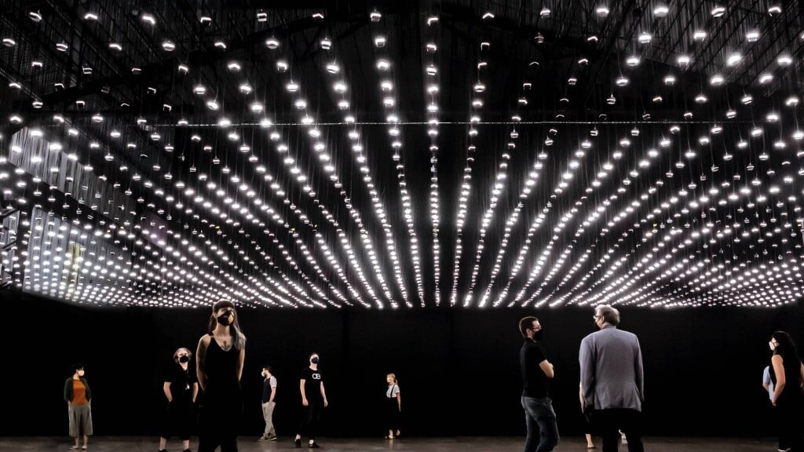

Field Atmosphonia, 2020
| 👤 for | Rafael Lozano-Hemmer |
|---|---|
| # Year | 2020 |
| 🔗 Official Site | vimeo.com/491274258 |
| 📋 I did | HardwarePCB DesignSoftwareSourcing |
“Field Atmosphonia” is a work featuring 2,300 speakers each playing back a different field recording. The speaker plays back whenever its light is turned on algorithmically.




Acknowledgment
This artwork by Rafael Lozano-Hemmer is the result of the combined efforts of a talented and diverse group of professionals. Each person has contributed unique skills and expertise to the creation of this piece. For more information about the team and their roles, please visit our official website.